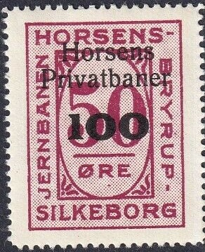
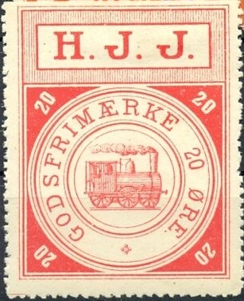

{kind=link}

I have also seen 60 o blue.
Return To Catalogue - Denmark - Denmark Railway Stamps, overview
Note: on my website many of the
pictures can not be seen! They are of course present in the
catalogue;
contact me if you want to purchase it.

I have also seen 60 o blue.
I've also seen the above issue with "Horsens Privatbaner" overprint: "100" on 50 o lilac.
The Horsens Juelsminde Railway (H.J.J.) operated from 1884 to 1957. Stamps were first issued in 1899.





In the above 'Large train' design I've seen:
5 o green, 10 o blue, 20 o red, 25 o blue, 30 o brown, 50 o blue.
"20" (at least two types) on 50 o blue, "25"
(at least 5 types) on 5 o green, "50" on 10 o blue.

Different (and smaller) type: 20 o blue. I've also seen 25 o red
in this design.


"JERNBANE HORSENS JERNBANE JUELSMINDE": 75 o black.
I've also seen 50 o red.
I've also seen the above issue with "Horsens
Privatbaner" overprint: 90 o blue; "90" on 35 o
green, "100" on 50 o red.
Also with "HORSENS PRIVATBANER": "70 øre" on
35 o green.
This railway operated from 1904 to 1967, I presume it was taken over by the Horsens Privatbaner.


1904 Image of a horse. 15 o blue and 20 o green (7 lines below
the horse); 15 o blue (5 lines below the horse) and 50 o red
(dotted lines below the horse). Finally a "25" on 15 o
blue with 4 lines below the horse.
In this design should exist:
With 7 lines below the horse: 15 o blue, 20 o green (1917?), 25 o
red, 30 o brown (1917?); "10 ØRE" (7 types) on 15 o
blue (1908)
With 4 or 5 lines below the horse: 10 o orange, 10 o blue (1927),
15 o blue, 25 o red; "10 ØRE" (7 types) on 15 o blue
(1908), "15 ØRE" (7 types) on 10 o blue (1917),
"25" on 15 o blue
With dotted lines below horse and all tree branches reaching tot
hhe top: 20 o light green, 25 o lilac, 50 o red, 35 o blue, 75 o
green, 90 o violet.


1951: with overprint "HORSENS PRIVATBANER" and
surcharged.
With "HORSENS PRIVATBANER" overprint:
"70 øre" on 35 o blue
With "Horsens Privatbaner" overprint: 75 o green, 90 o
lilac; "100" on 60 o red.
I have seen some bus-parcel stamps with inscription "Horsens-Odderjb Rutebil": 50 o green, or "HORSENS - ODDER RUTEBILER": 25 o blue, 50 o green.


Other railway company stamps with overprint "HORSENS
PRIVATBANER" or "Horsens Privatbaner"

1954 Scenic designs, 50 o ('Stop for Blink'), 60 o (anchor), 75 o
(Gaard), 90 o (Den gamble haervey), 100 o (canoe), 120 o
(fishing), 200 o (visit Bryrup, the Switzerland of Denmark).
Several overprints exist: "75" on 90 o, "330"
on 75 o and "440" on 60 o.

1957 Locomotive, 10 o violet and "100" on 10 o violet.

I'm not sure if this 'bus' label is actually a parcel stamp or a
busticket. It has inscription "HORSENS PRIVATBANER
BILRUTERNE", 100 o red, I've also seen 125 o violet.
The Horsens Torring Jernbane was established in 1891. It was renamed Horsens Vestbaner in 1929


20 o blue and "50" on 35 o red used in 1923. The
Skagenbanen used the same design of stamps.
I have seen 10 o brown, 15 o blue, 20 blue, 25 o
red, 25 o green (light or dark green), 35 o red, 50 o red, 90 o
violet.
Also "15" on 10 o brown, "20" (at least two
different types) on 15 o blue
The Horsens Torring Jernbane was renamed Horsens Vestbaner in 1929. At the same time the lines Horsens - Thyregod and Molle - Ejstrupholm were added. Horsens Vestbaner existed up to 1951.

1931 issue: 20 o blue (with or without dotted background), 25 o
red, 35 o green, 50 o violet, 60 o orange, 60 o yellow, 75 o
blue, 90 o brown, 90 o red. Shown above: 20 o blue here with 1939
cancel and 60 o orange.
I've also seen the above issue with "Horsens
Privatbaner" overprint: "90" on 35 o green,
Also with "HORSENS PRIVATABANER": "70 ØRE"
on 20 o blue.